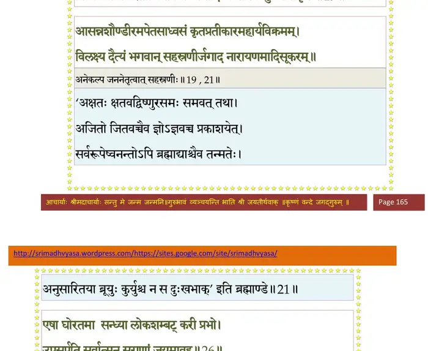
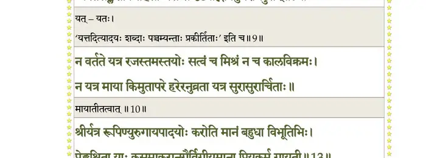
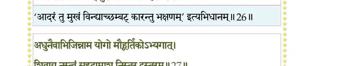
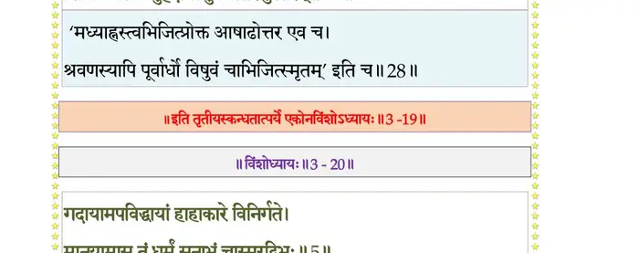

स्कन्ध 3 · अध्याय 19
श्लोक १
मैत्रेय उवाच–
तदेवमाकर्ण्य जलेशभाषितं महामनास्तद् विगणय्य दुर्मदः ।
हरेर्विदित्वा गतिमङ्ग नारदाद् रसातलं संविविशे त्वरान्वितः।। १ ।।
तदेवमाकर्ण्य जलेशभाषितं महामनास्तद् विगणय्य दुर्मदः ।
हरेर्विदित्वा गतिमङ्ग नारदाद् रसातलं संविविशे त्वरान्वितः।। १ ।।
श्लोक २
ददर्श तत्राविजितं धराधरं प््र•ेन्नीयमानावनिमग्रदंष्ट्रया ।
मुष्णन्तमक्ष्णाम्बुरुहारुणश्रियं जहास चाहो वनगोचरो मृगः।। २ ।।
मुष्णन्तमक्ष्णाम्बुरुहारुणश्रियं जहास चाहो वनगोचरो मृगः।। २ ।।
श्लोक ३
आहैनमेह्यज्ञ महीं विमुञ्च नो रसौकसां विश्वसृजेयमर्पिता ।
न स्वस्ति यास्यस्यमुया मयेक्षितः सुराधमासादितसूकराकृते।। ३ ।।
न स्वस्ति यास्यस्यमुया मयेक्षितः सुराधमासादितसूकराकृते।। ३ ।।
श्लोक ६
त्वं नः सपत्नैरभयाय किं वृतो यो मायया हंस्यसुरान् परोक्षजित् ।
त्वां योगमायाबलमल्पपौरुषं संस्थाप्य मूढं प््रामृजे सुहृच्छुचः।। ४
त्वयि स्थिते गदया शीर्णशीर्षण्यस्मद्भुजच्युतया ये च तुभ्यम् ।
बलिं हरन्त्यृषयो ये च देवाः स्वयं सर्वे न भविष्यन्त्यमूलाः।। ५
स तुद्यमानोऽरिदुरुक्ततोमरैर्दंष्ट्राग्रगां गामुपलभ्य भीताम् ।
तोदं मृषन् निरगादम्बुमध्याद् ग्राहाहतः सकरेणुर्यथेभः।। ६ ।।
त्वां योगमायाबलमल्पपौरुषं संस्थाप्य मूढं प््रामृजे सुहृच्छुचः।। ४
त्वयि स्थिते गदया शीर्णशीर्षण्यस्मद्भुजच्युतया ये च तुभ्यम् ।
बलिं हरन्त्यृषयो ये च देवाः स्वयं सर्वे न भविष्यन्त्यमूलाः।। ५
स तुद्यमानोऽरिदुरुक्ततोमरैर्दंष्ट्राग्रगां गामुपलभ्य भीताम् ।
तोदं मृषन् निरगादम्बुमध्याद् ग्राहाहतः सकरेणुर्यथेभः।। ६ ।।
श्लोक ८
तं निःसरन्तं सलिलादनुद्रुतो हिरण्केशो द्विरदं यथा झषः ।
करालदंष्ट्रोऽशनिनिःस्वनोऽब्रवीद् गतह्रियां किं न्वसतां विगर्हितम्।।७
स गामुदस्तात् सलिलस्य गोचरे विन्यस्य तस्यामदधात् स्वसत्त्वम् ।
अभिष्टुतो विश्वसृजां प््रासूनैरापूर्यमाणो विबुधैः पश्यतोऽरेः।। ८ ।।
करालदंष्ट्रोऽशनिनिःस्वनोऽब्रवीद् गतह्रियां किं न्वसतां विगर्हितम्।।७
स गामुदस्तात् सलिलस्य गोचरे विन्यस्य तस्यामदधात् स्वसत्त्वम् ।
अभिष्टुतो विश्वसृजां प््रासूनैरापूर्यमाणो विबुधैः पश्यतोऽरेः।। ८ ।।
श्लोक ९
परानुषक्तं तपनीयोपकल्पमहागदं काञ्चनचित्रिताङ्गम् ।
मर्माण्यभीक्ष्णं प््रातुदन्तं दुरुक्तैः प््राचण्डमन्युः प््राहसंस्तं बभाषे।। ९ ।।
मर्माण्यभीक्ष्णं प््रातुदन्तं दुरुक्तैः प््राचण्डमन्युः प््राहसंस्तं बभाषे।। ९ ।।
श्लोक ११
भगवानुवाच–
सत्यं वयं भो वनगोचरा मृगा युष्मद्विधान् मृगये ग्रामसिंहान् ।
न मृत्युपाशैः प््रातियुक्तस्य वीराः विकत्थनं तव गृह्णन्त्यभद्र।। १०
एते वयं न्यासहरा रसौकसां गतह्रियो गदया द्रावितास्ते ।
तिष्ठामहेऽथापि कथञ्चिदाजौ स्थेयं क्व यामो बलिनोत्पाद्य वैरम्।। ११ ।।
सत्यं वयं भो वनगोचरा मृगा युष्मद्विधान् मृगये ग्रामसिंहान् ।
न मृत्युपाशैः प््रातियुक्तस्य वीराः विकत्थनं तव गृह्णन्त्यभद्र।। १०
एते वयं न्यासहरा रसौकसां गतह्रियो गदया द्रावितास्ते ।
तिष्ठामहेऽथापि कथञ्चिदाजौ स्थेयं क्व यामो बलिनोत्पाद्य वैरम्।। ११ ।।
श्लोक १२
त्वं यद् रथानां किल यूथपाधिपो
घटस्व नोऽस्वस्तय आश्वदुद्रुहः ।
संस्थाप्य चास्मान् प््रामृजाश्रु स्वकानां
यः स्वां प््रातिज्ञां नातिपिपर्त्यसभ्यः।। १२ ।।
घटस्व नोऽस्वस्तय आश्वदुद्रुहः ।
संस्थाप्य चास्मान् प््रामृजाश्रु स्वकानां
यः स्वां प््रातिज्ञां नातिपिपर्त्यसभ्यः।। १२ ।।
श्लोक १३
सोऽधिक्षिप्तो भगवता प््रालब्धश्च रुषा भृशम् ।
आजहारोल्बणं क्रोधं क्रीड्यमानोऽहिराडिव।। १३ ।।
आजहारोल्बणं क्रोधं क्रीड्यमानोऽहिराडिव।। १३ ।।
श्लोक १४
विसृजन्नहिवच्छवासं मन्युप््राचलितेन्द्रियः ।
आसाद्य तरसा दैत्यो गदयाऽभ्यहनद्धरिम्।। १४ ।।
आसाद्य तरसा दैत्यो गदयाऽभ्यहनद्धरिम्।। १४ ।।
श्लोक १५
भगवांस्तु गदावेगं विसृष्टं रिपुणोरसि ।
अवञ्चयत् तिरश्चीनो योगारूढ इवान्तकम्।। १५ ।।
अवञ्चयत् तिरश्चीनो योगारूढ इवान्तकम्।। १५ ।।
श्लोक १६
पुनर्गदां स्वामादाय भ्रामयन्तमभीक्ष्णशः ।
अभ्यधावद्धरिः क्रुद्धः संरम्भाद् दष्टदच्छदः।। १६ ।।
अभ्यधावद्धरिः क्रुद्धः संरम्भाद् दष्टदच्छदः।। १६ ।।
श्लोक १७
ततः स्वगदयाऽरातिं दक्षिणांसभुवि प््राभुः ।
आजघ्ने स तु तां सौम्य गदया कोविदोऽहनत्।। १७ ।।
आजघ्ने स तु तां सौम्य गदया कोविदोऽहनत्।। १७ ।।
श्लोक १८
एवं गदाभ्यां गुर्वीभ्यां हर्यक्षो हरिरेव च ।
जिगीषया सुसंरब्धावन्योन्यमभिजघ्नतुः।। १८ ।।
जिगीषया सुसंरब्धावन्योन्यमभिजघ्नतुः।। १८ ।।
श्लोक १९
तयोः स्पृधोः स्निग्धगदाहताङ्गयोः क्षतस्रवाघ्राणविवृद्धयुद्धयोः ।
विचित्रमार्गांश्चरतोर्जिगीषया व्यभादिलायामिव शुष्मिणोर्मृधः।।१९।।
विचित्रमार्गांश्चरतोर्जिगीषया व्यभादिलायामिव शुष्मिणोर्मृधः।।१९।।
भागवततात्पर्यनिर्णय

श्लोक २१
दैत्यस्य यज्ञावयवस्य मायया गृहीतवाराहतनोर्महात्मनः ।
कौरव्य मह्यां द्विषतोर्विमर्दनं दिदृक्षुरागाद् ऋषिभिर्वृतः स्वराट् ।। २१ ।।
कौरव्य मह्यां द्विषतोर्विमर्दनं दिदृक्षुरागाद् ऋषिभिर्वृतः स्वराट् ।। २१ ।।
श्लोक २२
आसन्नशौण्डीरमपेतसाध्वसं कृतप््रातीकारमहार्यविक्रमम् ।
विलक्ष्य दैत्यं भगवान् सहस्रणीर्जगाद नारायणमादिसूकरम्।। २१
ब्रह्मोवाच–
एष ते देव देवानामङ्घ्रिमूलमुपेयुषाम् ।
विप््र•णां सौरभेयीणां भूतानामप्यनागसाम्।। २२ ।।
विलक्ष्य दैत्यं भगवान् सहस्रणीर्जगाद नारायणमादिसूकरम्।। २१
ब्रह्मोवाच–
एष ते देव देवानामङ्घ्रिमूलमुपेयुषाम् ।
विप््र•णां सौरभेयीणां भूतानामप्यनागसाम्।। २२ ।।
भागवततात्पर्यनिर्णय

श्लोक २३
आगस्कृद् भयकृद् दुष्कृदस्मल्लब्धवरोऽसुरः ।
अन्वेषयन्नप््रातिरथो लोकानटति कण्टकः।। २३ ।।
अन्वेषयन्नप््रातिरथो लोकानटति कण्टकः।। २३ ।।
श्लोक २४
मैनं मायाविनं दृप्तं निरङ्कुशमसत्तमम् ।
आक्रीड बालवद् देव यदाशीविषमुत्थितम्।। २४ ।।
आक्रीड बालवद् देव यदाशीविषमुत्थितम्।। २४ ।।
श्लोक २५
न यावदेष वर्धेत स्वां वेलां प््र•प्य दारुणः ।
स्वां देवमायामास्थाय तावज्जह्येनमच्युत।। २५ ।।
स्वां देवमायामास्थाय तावज्जह्येनमच्युत।। २५ ।।
श्लोक २६
एषा घोरतमा सन्ध्या लोकशम्बट्करी प््राभो ।
उपसर्पति सर्वात्मन् सुराणां जयमावह।। २६ ।।
उपसर्पति सर्वात्मन् सुराणां जयमावह।। २६ ।।
भागवततात्पर्यनिर्णय

श्लोक २७
अधुनैवाभिजिन्नाम योगो मौहूर्तिकोऽभ्यगात् ।
शिवाय नस्त्वं सुहृदामाशु निस्तर दुस्तरम्।। २७ ।।
शिवाय नस्त्वं सुहृदामाशु निस्तर दुस्तरम्।। २७ ।।
भागवततात्पर्यनिर्णय

श्लोक २८
दिष्ट्या त्वा विहितं मृत्युमयमासादितः स्वयम् ।
विक्रम्यैनं मृधे हत्वा लोकानाधेहि शर्मणि।। २८ ।।
विक्रम्यैनं मृधे हत्वा लोकानाधेहि शर्मणि।। २८ ।।
।। इति श्रीमद्भागवते तृतीयस्कन्धे एकोनविंशोऽध्यायः ।।